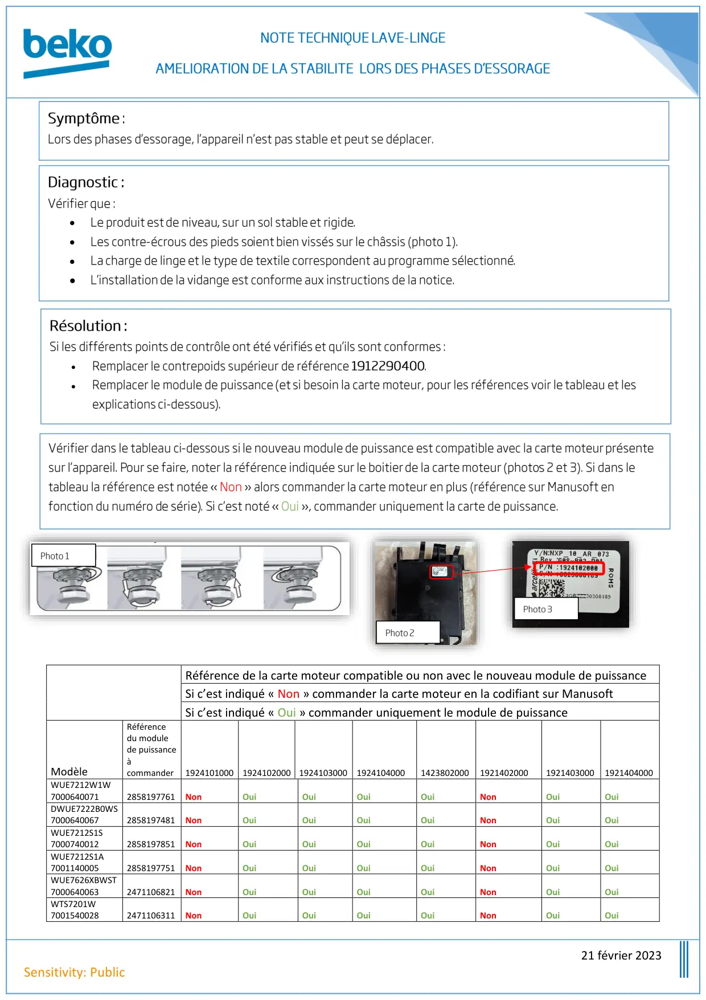
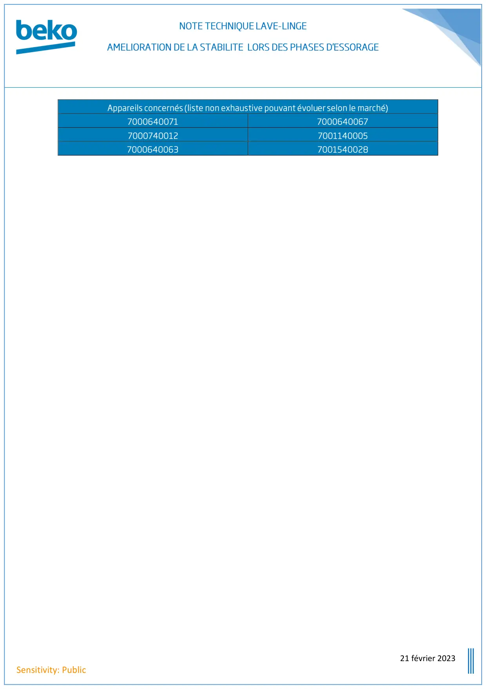

Note Technique lave linge = Amélioration de la stabilité lors des phases d'essorage bulletin 3

21 février 2023Sensitivity: PublicRéférence de la carte moteur compatible ou non avec le nouveau module de puissanceSi c’est indiqué « Non » commander la carte moteur en la codifiant sur ManusoftSi c’est indiqué « Oui » commander uniquement le module de puissanceModèleRéférencedu modulede puissanceàcommander1924101000 1924102000 1924103000 19241040001423802000192140200019214030001921404000WUE7212W1W70006400712858197761NonOuiOuiOuiOuiNonOuiOuiDWUE7222B0WS70006400672858197481NonOuiOuiOuiOuiNonOuiOuiWUE7212S1S70007400122858197851NonOuiOuiOuiOuiNonOuiOuiWUE7212S1A70011400052858197751NonOuiOuiOuiOuiNonOuiOuiWUE7626XBWST70006400632471106821NonOuiOuiOuiOuiNonOuiOuiWTS7201W70015400282471106311NonOuiOuiOuiOuiNonOuiOui••••••
1 / 2
21 février 2023Sensitivity: Public
2 / 2